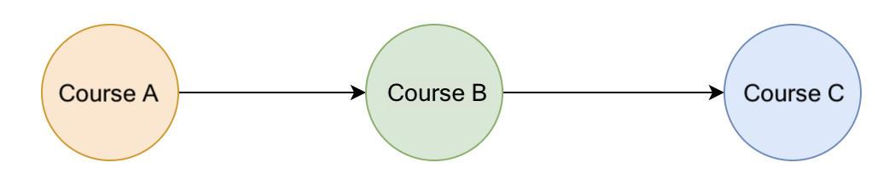

Выбирая курсы на следующий семестр в колледже, вы, возможно, заметили, что на некоторых курсах продвинутого уровня есть предварительные условия, требующие от вас сначала пройти некоторые вводные курсы. Например, как показано на рисунке 12, чтобы пройти курс C, вам необходимо сначала пройти курс B, а чтобы пройти курс B, вам необходимо сначала пройти курс A. Чтобы получить ученую степень, необходимо пройти множество курсов. Вы не хотите узнать в последнем семестре, что вы не прошли некоторые обязательные курсы для продвинутого курса. Итак, как мы можем правильно организовать порядок курсов, учитывая эти обязательные отношения между ними?

Рисунок 12. Взаимосвязь обязательных условий между курсами
«Топологическая сортировка» помогает решить проблему. Он обеспечивает линейную сортировку на основе необходимого порядка между вершинами в ориентированных ациклических графах. Точнее, учитывая вершины u и v, чтобы достичь вершины v, мы должны сначала достичь вершины u. При «топологической сортировке» u должно стоять перед v в порядке сортировки. Самый популярный алгоритм «топологической сортировки» — алгоритм Кана.
В этом видео мы расскажем, как алгоритм Кана можно использовать для топологической сортировки.
Video: Kahn's Algorithm Export v2_1080p
Обратите внимание: для простоты представления алгоритма Кана мы перебрали все курсы и уменьшили входную степень тех, для которых текущий курс является обязательным. Это требует от нас перебора всех E предпосылки для всех V курсы, в результате которых O(V⋅E) временная сложность за счет O(V) пространство для хранения степени для каждой вершины.
Однако этот шаг можно выполнить более эффективно, создав список смежности, в котором adjacencyList[course] содержит список курсов, зависящих от course. Затем, когда каждый курс будет пройден, мы будем перебирать только те курсы, для которых текущий курс является обязательным условием. Это уменьшит общую временную сложность до O(V+E) за счет дополнительного O(E) пространство для хранения списка смежности.
V представляет количество вершин, а E представляет количество ребер.